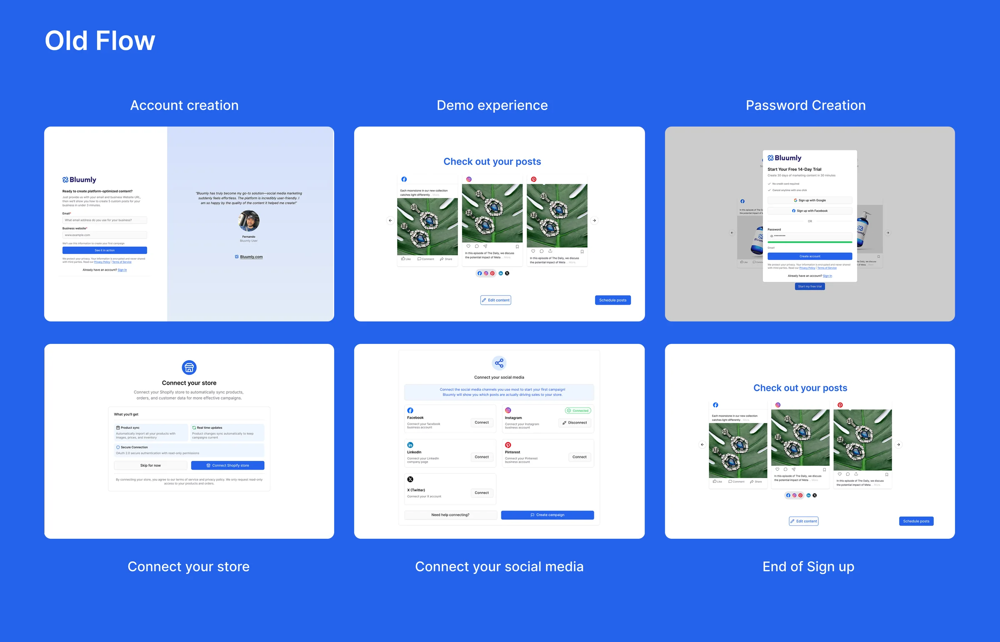
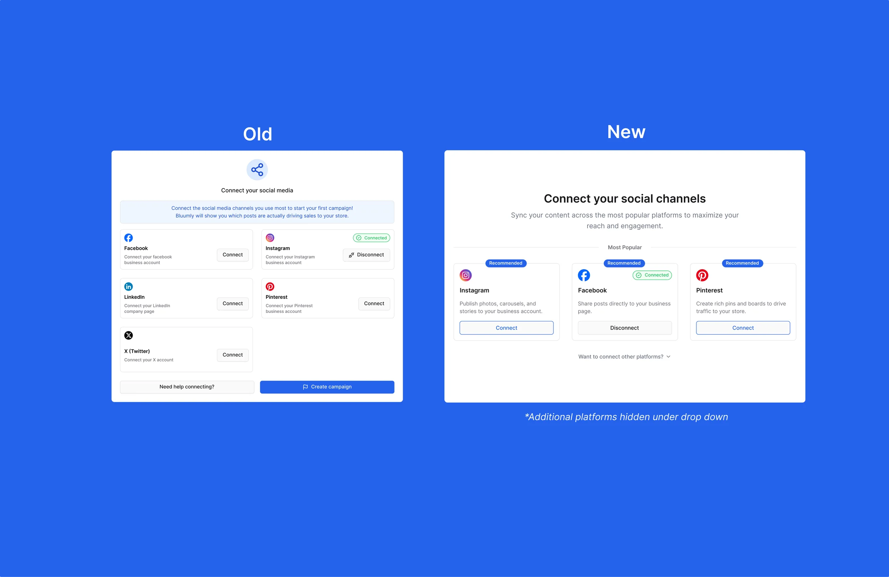

Case study 01 — Bluumly
Signup Flow
Reducing friction in Bluumly's onboarding to fix a broken first impression.

01 — Overview
Bluumly was facing an issue that many startups face: user acquisition and retention were at an all-time low. I met with the team to discuss what we were noticing in user screen recordings and how we could remedy any user pain points.
02 — The challenge
When looking into Clarity, it was clear that our users were struggling to get a foot in the door. The sign-up flow initially included a demo flow that gave users a quick overview of what Bluumly could offer before prompting them to sign up. This was a pain point that gave users a false sense of accomplishment and a "gotcha" moment, negatively impacting the user experience.

03 — The solution
I brought the flow to a fellow designer for a fresh set of eyes. His feedback was specific: the Shopify signup process was carrying too many steps — account creation, a demo flow, password creation, a store connection screen, and a social media connection screen, all in sequence. He recommended reducing the social platform options from seven shown at once down to three, with the rest tucked under a dropdown, and cutting the visible signup options down to two: Shopify OAuth and email.
I took that feedback and focused on three goals: reduce steps, move account creation to the start, and strip the nav bar until onboarding was complete.
The biggest win was adding Shopify OAuth — letting users sign up and connect their store in a single click. For social media, I worked with our marketing strategist to narrow the options down to Facebook, Instagram, and Pinterest based on user behaviour, cutting visual clutter and decision fatigue.
04 — AI-assisted workflow
Following my session with an outside designer, I brought his feedback directly into a working prototype using Figma Make. Rather than rebuilding the flow from scratch, I used AI to generate a refined iteration of the existing user flow — capturing the structural improvements quickly. From there, I took the core layout and idea as a foundation, then layered in Bluumly's branding guidelines and built out fully editable frames ready for handoff to our front-end developer.

05 — Outcome
- 6 → 3Cut the signup flow from 6 steps to 3, removing the demo redirect, separate password creation, and manual store connection screen
- 1-clickReplaced manual store connection with one-click Shopify OAuth — matching how our actual users, Shopify store owners, already expect to sign in
- 7 → 3Narrowed visible social platform options from 7 to 3, moving the rest under a dropdown to reduce decision fatigue
- No navStripped the nav bar until onboarding was complete, removing exit points before account creation
Bluumly was still pre-scale at the time of this redesign, so this wasn't about lifting a metric against existing volume — the priority was removing friction before growth, using screen recordings rather than usage data to guide the decisions above.